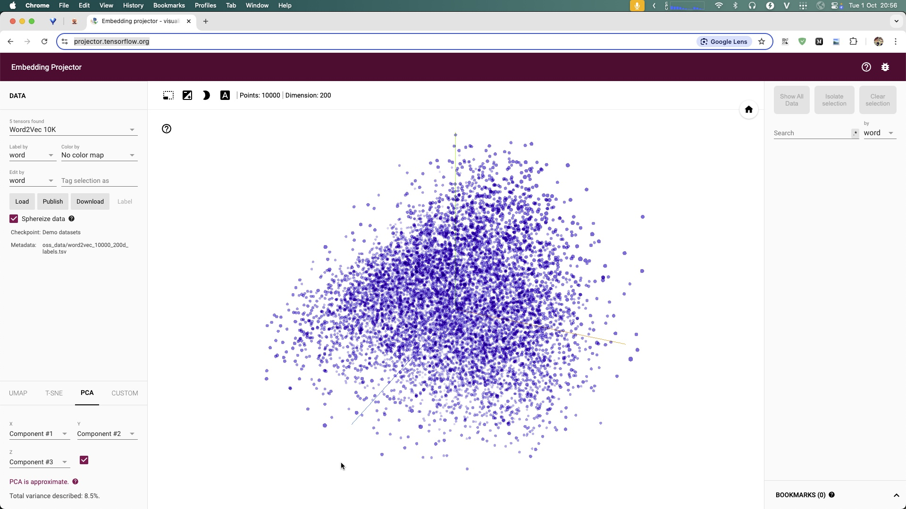

Concept · tensorflow-trainingteaching
Train with TensorFlow / Keras
Same classifier lesson, declarative style: define the model, compile, then fit over epochs.
dataset→model→compile→fit→checkpoint
01AI Lab
Whymatters
Why Keras still matters
short
Concise
No manual backward/step — the framework owns the loop.
viz
Projector
Embedding Projector makes vector space visible in 3D.
pair
Pair with PyTorch
Two APIs, one learning idea — pick what fits.
02notes/tensorflow-training.md
Kerasideas
Key ideas
compile
compile = how to learn
Optimizer, loss (cross-entropy), metrics.
fit
fit = run training
Epochs, batches, backprop — handled for you.
cb
Callbacks
EarlyStopping + ModelCheckpoint save the best model.
Keywords: tensorflow · keras · epoch · Read: notes/tensorflow-training.md
03notes/tensorflow-training.md
Illustrationtensorflow-keras.png
Illustration

04AI Lab · illustration
Codeskeleton
compile then fit
model = keras.Sequential([
Dense(64, activation="relu"),
Dense(NUM_CLASSES, activation="softmax"),
])
model.compile(optimizer="adam",
loss="sparse_categorical_crossentropy",
metrics=["accuracy"])
model.fit(x, y, epochs=EPOCHS, validation_data=val)
05notes/tensorflow-training.md
Illustrationsoftmax-regression.jpg
Illustration

06AI Lab · illustration
Illustrationtf-projector.jpg
Illustration

Inspect embeddings in 3D while training.
07AI Lab · illustration
Monitorcurves
What to watch each epoch
acc
accuracy
Rising on train — good, but not enough alone.
val
val_loss
Rising while train falls → overfitting.
stop
EarlyStopping
Stop when val stops improving; keep best weights.
08notes/tensorflow-training.md
Pipelinepipeline
Same destination as PyTorch
dataset→Keras model→compile→fit→checkpoint
09serves classification.md
Relatedstack
Connect the stack
cls
Classification
The task this trains.
pt
PyTorch twin
Manual loop version of the same idea.
emb
Embedding
Projector visualizes the vectors.
10related
endAI Lab